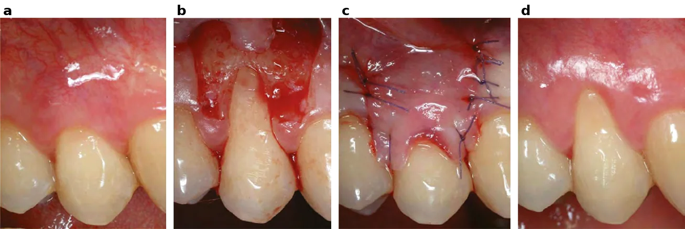

نسخه استخراجشده؛ ترجمه یا تأیید علمی انجام نشده است. وضعیت: captured
ایده ساده است: بافت مجاور را به سمت تاج بکش تا سطح ریشه برهنه را بپوشاند. اما اجرای موفق آن، به چند شرط دقیق بستگی دارد.

برشهای افقی در سطح پاپیلاهای مجاور، در فاصلهای برابر با عمق تحلیل — تا پاپیلاهای جراحی ساخته شوند.
برشهای آزادکننده عمودی (در نسخه کلاسیک) یا تکنیک بدون برش عمودی در نسخه پیشرفته زوکلی.
بلند کردن فلپ ترکیبی: تمامضخامت در بخش کرونال، نیمضخامت در بخش آپیکال.
🔑 آزادسازی کامل پریوست در قاعده فلپ — تا فلپ بتواند بدون هیچ کششی به سمت تاج برود.
دپیتلیالیزه کردن پاپیلاهای آناتومیک، تا بستری برای نشستن پاپیلاهای جراحی فراهم شود.
آمادهسازی سطح ریشه و در صورت نیاز، کاربرد EMD.
بخیه با قرار دادن لبه فلپ حداقل ۱ تا ۲ میلیمتر کرونالیتر از CEJ.
🔑 دو عامل تعیینکننده موفقیت CAF:
نبود کشش — فلپ تحت کشش، به موقعیت اولیه بازمیگردد و پوشش از دست میرود. آزمون ساده: فلپ باید خودبهخود در موقعیت کرونالی بماند، پیش از آنکه بخیه بزنی.
قرار دادن بیشازحد کرونالی — چون در دوره بهبود، مقداری جمعشدگی رخ میدهد.
در این تکنیک، از راه شیار لثهای یک تونل زیرمخاطی ایجاد میشود بدون بریدن پاپیلاها.
| مزیت | عیب |
|---|---|
| 🟢 حفظ کامل پاپیلاها — نتیجه زیبایی برتر | 🔴 از نظر فنی دشوارتر است |
| 🟢 خونرسانی بهتر — بدون برش عمودی | 🔴 خطر پارگی بافت نازک حین ایجاد تونل |
| 🟢 مناسب تحلیلهای متعدد مجاور | 🔴 دید محدود |
| ترکیب | منطق |
|---|---|
| CAF + پیوند بافت همبند زیراپیتلیالی (SCTG) | 🟢 استاندارد طلایی: بهترین و پایدارترین نتایج پوشش ریشه |
| تونل + SCTG | نتیجه زیبایی برتر در تحلیلهای متعدد |
| CAF + EMD | جایگزین SCTG وقتی برداشت پیوند مطلوب نیست |
| CAF + ماتریکس کلاژنی | پرهیز از محل دهنده؛ نتایج نزدیک اما نه برابر با SCTG |
🔑 چرا افزودن پیوند بافت همبند نتیجه را بهتر میکند؟ سه دلیل: ضخیم کردن بافت (بیوتایپ نازک را به ضخیم تبدیل میکند)، افزایش پهنای لثه کراتینیزه، و پایداری بلندمدت بیشتر نتیجه.
⚠️ در بیوتایپ نازک، CAF بهتنهایی نتیجه پایداری نمیدهد — افزودن پیوند یا جایگزین آن تقریباً ضروری است.
| عامل | مطلوب | نامطلوب |
|---|---|---|
| طبقهبندی | 🟢 میلر I و II / کایرو RT1 | 🔴 میلر IV / کایرو RT3 |
| بافت بیندندانی | 🟢 دستنخورده | 🔴 از دست رفته |
| بیوتایپ | 🟢 ضخیم | 🔴 نازک — نیازمند پیوند |
| لثه کراتینیزه آپیکال به تحلیل | 🟢 موجود | 🔴 ناکافی |
| عمق دهلیز | 🟢 عمیق | 🔴 کمعمق — محدودکننده تحرک فلپ |
| سیگار | غیرسیگاری | 🔴 نتیجه معناداری بدتر |
| سایش سرویکال عمیق | ندارد | 🔴 CEJ قابل شناسایی نیست؛ نیازمند ترمیم همزمان |
🔑 مهمترین پیشبینیکننده، وضعیت بافت بیندندانی است — همان چیزی که در طبقهبندی میلر و کایرو خواندی. پاپیلای مجاور، هم خونرسانی پیوند را تأمین میکند و هم سقف ارتفاعی پوشش را تعیین میکند.
مسواک نزدن ناحیه برای ۴ تا ۶ هفته — نه فقط تا برداشتن بخیه.
کلرهگزیدین در همین بازه.
پرهیز از کشیدن لب و هرگونه فشار مکانیکی روی ناحیه.
بازگشت تدریجی به مسواک نرم پس از این دوره، با تکنیک اصلاحشده.
⚠️ تا عامل آغازگر اصلاح نشده، وارد جراحی نشو. اگر تکنیک مسواک زدن تروماتیک بیمار اصلاح نشده باشد، تحلیل ظرف چند ماه بازمیگردد و کل جراحی هدر میرود.
⚠️ اشتباه رایج ۱: فلپ باید بدون هیچ کششی در موقعیت کرونالی بماند — پیش از بخیه زدن.
⚠️ اشتباه رایج ۲:CAF + SCTG استاندارد طلایی پوشش ریشه است.
⚠️ اشتباه رایج ۳: در بیوتایپ نازک، CAF بهتنهایی نتیجه پایداری نمیدهد.